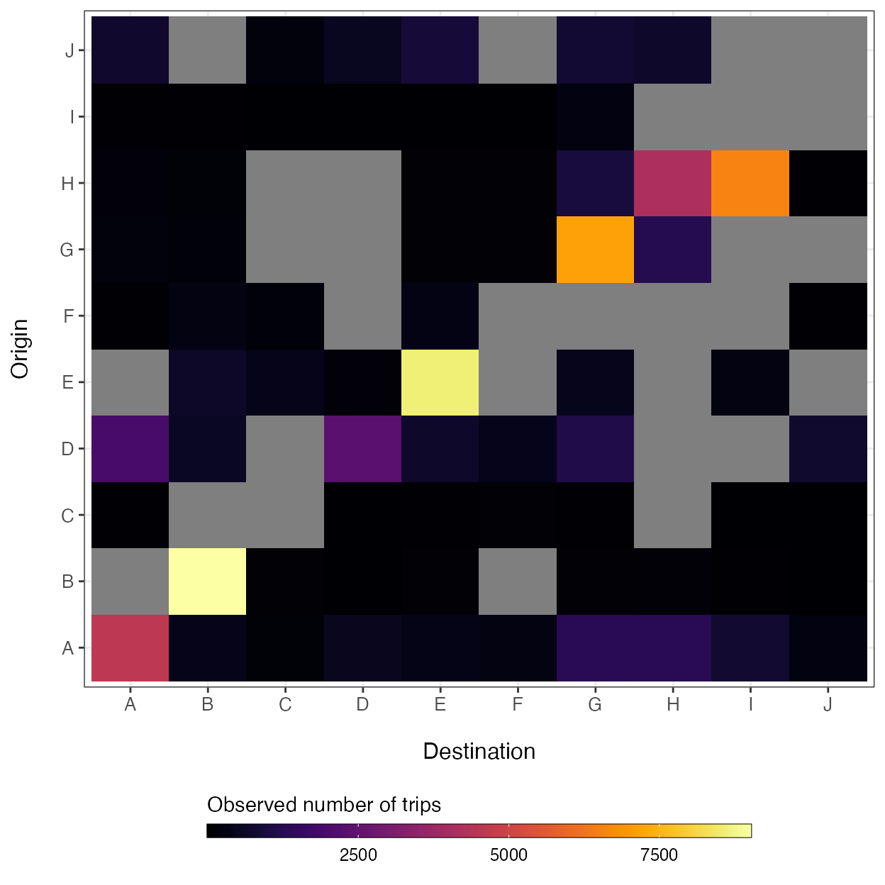
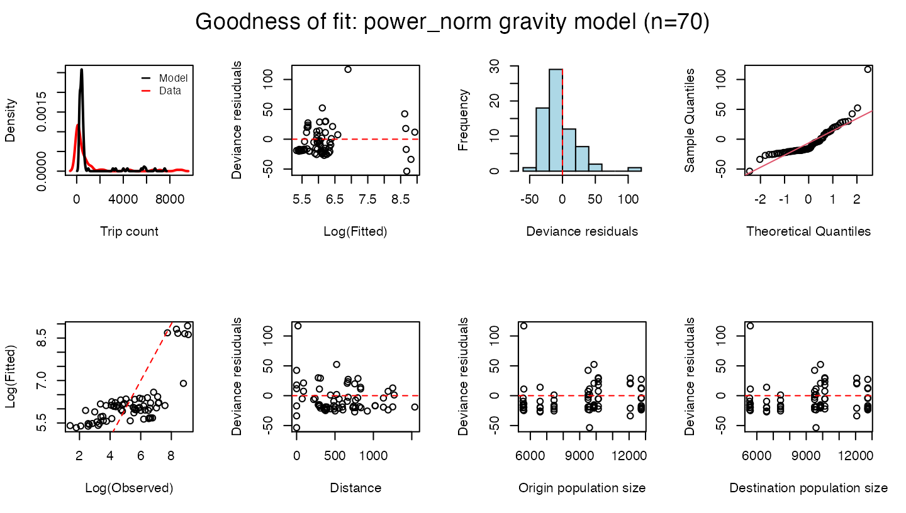
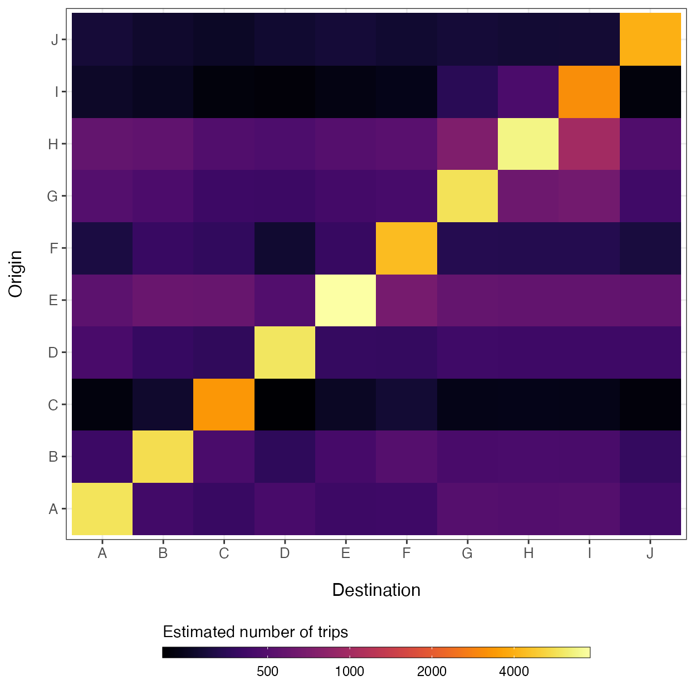
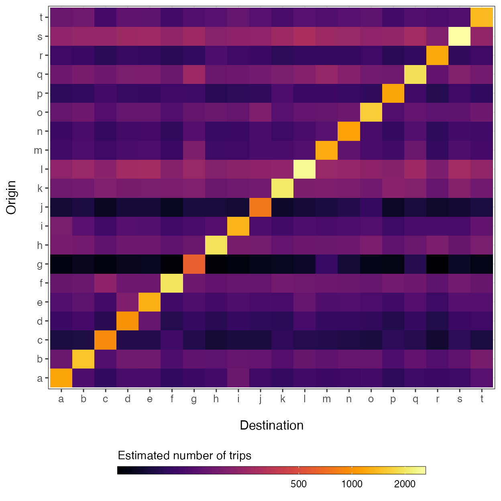

vignettes/V3_fitting_mobility_models.Rmd
V3_fitting_mobility_models.RmdOne of the most commonly used types of mobility model is the gravity model, which is used to model connectivity among locations based on the distances among \(i\) origins and \(j\) destinations (\(d_{ij}\)) and population sizes of each location (\(N_i\) and \(N_j\)). A major advantage of the gravity model is that distance and population size are simple covariates that can be obtained in almost any context, allowing a researcher to infer connectivity with little information.
When fitting the gravity model to data, we also need a matrix of observed travel volume (\(M\)). Travel volume is an intentionally vague term here because a mobility data matrix can be populated with a variety of measurements that capture relative amounts of travel among locations. For example, if we are using Call Data Records (CDR) which are measures of mobile phone usage supplied by mobile phone companies, the unit of travel volume is likely to be the total number of person trips per unit time. Or if we are using a travel survey that researchers have collated from questionares given to residents of an area, the measurement of travel volume might be the total number of individuals that reported travelling from \(i\) to \(j\) in the past month. It is important that all \(ij\) cells in \(M\) have the same unit of travel volume per unit time because the model estimates parameters based on relative differences in travel volume.
The rest of this vignette shows a simple example of how to use the workhorse functions in this package (mobility(), predict(), and check()) to estimate travel volume (\(\hat{M}_{ij}\)) for all \(i \rightarrow j\) travel routes found in the supplied data matrices (\(M\), \(D\), and \(N\)). Travel volume can also be predicted for a different geographic region or data on a different spatial scale by supplying these other data to the newdata argument of the predict() function.
Before we can fit a mobility model, we must build data matrices from the longform travel data. The utility functions get_mob_matrix(), get_distance_matrix(), and get_pop_vec() can be used to generate data matrices representing travel volume among locations (\(M\)), along with distances (\(D\)) and population sizes (\(N\)). The mobiliy_matrices() data object included with this package provides a list of simulated data matrices and is formatted for the data argument of the mobility() function, which requires a list of numerical matrices/vectors with matching dimensions and names.
str(mobility::mobility_matrices)
#> List of 3
#> $ M: num [1:10, 1:10] 4559 NA 25 1964 NA ...
#> ..- attr(*, "dimnames")=List of 2
#> .. ..$ origin : chr [1:10] "A" "B" "C" "D" ...
#> .. ..$ destination: chr [1:10] "A" "B" "C" "D" ...
#> $ D: num [1:10, 1:10] 0 671 1023 521 796 ...
#> ..- attr(*, "dimnames")=List of 2
#> .. ..$ origin : chr [1:10] "A" "B" "C" "D" ...
#> .. ..$ destination: chr [1:10] "A" "B" "C" "D" ...
#> $ N: Named num [1:10] 9868 9511 5561 9596 12741 ...
#> ..- attr(*, "names")= chr [1:10] "A" "B" "C" "D" ...By design, we have added additional stochasticity around trip counts in the movement matrix (\(M\)) and randomly sampled 80% of observed routes to simulate missing observations, which are shown as grey cells in the plot below.
ggplot(data=melt(mobility_matrices$M)) +
geom_tile(aes(x=factor(destination),
y=factor(origin),
fill=value)) +
xlab('Destination') + ylab("Origin") +
theme_bw() + theme(axis.text.x=element_text(size=10),
axis.text.y=element_text(size=10),
axis.title.x=element_text(size=12, margin = margin(t = 15)),
axis.title.y=element_text(size=12, margin = margin(r = 15)),
legend.position='bottom') +
viridis::scale_fill_viridis(option='inferno', direction=1) +
guides(fill=guide_colorbar(title='Observed number of trips',
title.position='top',
label.theme=element_text(size=9),
barwidth=20,
barheight=0.5,
frame.colour='black',
ticks=TRUE))
Several different mobility models can be fitted to the data using the mobility() function. For a full list of available models, see the ‘Curated list of mobility models’ vignette. This function uses the distance among locations (\(D\)) and population sizes (\(N\)) as covariates in the specified model equation, which is fitted to the movement matrix (\(M\)) with a Poisson likelihood link function. Fitting a gravity model can be specified using the model = 'gravity' argument. The mobility() function contains several variants of the gravity model which can be specified by the type argument.
mod <- mobility(data=mobility_matrices,
model='gravity',
type='power_norm',
n_chain=2,
n_burn=1000,
n_samp=1000,
n_thin=2,
DIC=TRUE)
#> ::Fitting power_norm gravity model for 10 origins and 10 destinations::
#> Compiling model graph
#> Resolving undeclared variables
#> Allocating nodes
#> Graph information:
#> Observed stochastic nodes: 70
#> Unobserved stochastic nodes: 33
#> Total graph size: 648
#>
#> Initializing model
#>
#> NOTE: Stopping adaptationIn this example, specifying type = 'power_norm' will fit a normalized gravity model, which uses a power law dispersal kernel and normalizes the connectivity of all routes emanating from origin \(i\): \[
\begin{aligned}
m_{ij} &\sim \text{Poisson}\big(\lambda_{ij}\big)\\
\\
\lambda_{ij} &= \theta N_i \Bigg(
\frac{
N_j^\omega d_{ij}^{-\gamma}
}{
\sum_{\forall j} N_j^\omega d_{ij}^{-\gamma}
} \Bigg)
\end{aligned}
\] Here, \(\theta\) is a proportionality constant representing the overall number of trips per person taken from the origin population \(N_i\), and the exponential parameter \(\omega\) scales the attractive force of each \(j\) destination population sizes. The kernel function \(d_{ij}^{-\gamma}\) serves as a penalty on the proportion of travel from \(i\) to \(j\) based on distance. The function estimates the posterior distribution of these model parameters using a Poisson likelihood and Bayesian MCMC inference. The additional arguments determine the parameters for the MCMC algorithm. Here, the function will use 2 sampling chains, discards the first 1000 samples as ‘burin in’, and then take 1000 samples thinning by 2 to give 500 total samples per chain. The DIC=TRUE argument tells the function to calculate the Deviance Information Criterion (DIC) of the fitted model.
Fitting a mobility model to a large number of locations (e.g. \(\gt 100\)) or drawing a large number of samples from posterior distributions (e.g. 10000) may take several minutes. If computation is cumbersome, then the model can run sampling chains in parallel instead of sequentially by specifying parallel = TRUE.
The fitting function mobility() returns results as a mobility.model that contains information on the type of model, the data used, and the estimated model parameters.
str(mod)
#> List of 10
#> $ model : chr "gravity"
#> $ type : chr "power_norm"
#> $ n_chain: num 2
#> $ n_burn : num 1000
#> $ n_samp : num 1000
#> $ n_thin : num 2
#> $ DIC : logi TRUE
#> $ data :List of 4
#> ..$ M : num [1:10, 1:10] 4559 NA 25 1964 NA ...
#> .. ..- attr(*, "dimnames")=List of 2
#> .. .. ..$ origin : chr [1:10] "A" "B" "C" "D" ...
#> .. .. ..$ destination: chr [1:10] "A" "B" "C" "D" ...
#> ..$ D : num [1:10, 1:10] 0 671 1023 521 796 ...
#> .. ..- attr(*, "dimnames")=List of 2
#> .. .. ..$ origin : chr [1:10] "A" "B" "C" "D" ...
#> .. .. ..$ destination: chr [1:10] "A" "B" "C" "D" ...
#> ..$ N_orig: Named num [1:10] 9868 9511 5561 9596 12741 ...
#> .. ..- attr(*, "names")= chr [1:10] "A" "B" "C" "D" ...
#> ..$ N_dest: Named num [1:10] 9868 9511 5561 9596 12741 ...
#> .. ..- attr(*, "names")= chr [1:10] "A" "B" "C" "D" ...
#> $ params :List of 2
#> ..$ : 'mcmc' num [1:500, 1:6] 44243 44242 44245 44244 44242 ...
#> .. ..- attr(*, "dimnames")=List of 2
#> .. .. ..$ : NULL
#> .. .. ..$ : chr [1:6] "deviance" "gamma" "omega" "pD" ...
#> .. ..- attr(*, "mcpar")= num [1:3] 1 500 1
#> ..$ : 'mcmc' num [1:500, 1:6] 44246 44244 44245 44245 44247 ...
#> .. ..- attr(*, "dimnames")=List of 2
#> .. .. ..$ : NULL
#> .. .. ..$ : chr [1:6] "deviance" "gamma" "omega" "pD" ...
#> .. ..- attr(*, "mcpar")= num [1:3] 1 500 1
#> ..- attr(*, "class")= chr "mcmc.list"
#> $ summary:'data.frame': 6 obs. of 8 variables:
#> ..$ mean : num [1:6] 1.95e-01 5.48e-04 9.96e-01 4.42e+04 4.42e+04 ...
#> ..$ sd : num [1:6] 0.000623 0.000545 0.004043 2.903769 2.903769 ...
#> ..$ Q2.5 : num [1:6] 1.94e-01 1.38e-05 9.87e-01 4.42e+04 4.42e+04 ...
#> ..$ Q97.5: num [1:6] 1.96e-01 2.07e-03 1.00 4.43e+04 4.43e+04 ...
#> ..$ Rhat : num [1:6] 1 1.03 1 1.04 1.04 NA
#> ..$ n.eff: num [1:6] 690 348 908 503 503 NA
#> ..$ AC5 : num [1:6] -0.05 0.06 0.03 0.04 0.04 NA
#> ..$ AC10 : num [1:6] 0.02 0.01 -0.05 0.04 0.04 NA
#> - attr(*, "class")= chr "mobility.model"To calculate summary statistics of estimated parameter values, you can supply a fitted mobility.model object to the summary() function. This function is a wrapper for the MCMCvis::MCMCsummary() function that calculates summary statistics for each parameter across each chain along with convergance diagnosics like the Gelman-Rubin convergence diagnostic and (\(\hat{R}\)) and samples auto-correlation foreach parameter.
summary(mod, probs=c(0.025, 0.975), ac_lags=10)
#> mean sd Q2.5 Q97.5 Rhat n.eff AC10
#> gamma 1.951544e-01 0.0006230930 1.939687e-01 1.964089e-01 1.00 690 0.02
#> omega 5.476347e-04 0.0005451965 1.376488e-05 2.071149e-03 1.03 348 0.01
#> theta 9.955340e-01 0.0040434887 9.871170e-01 1.003379e+00 1.00 908 -0.05
#> DIC 4.424905e+04 2.9037686378 4.424541e+04 4.425686e+04 1.04 503 0.04
#> deviance 4.424498e+04 2.9037686378 4.424134e+04 4.425279e+04 1.04 503 0.04
#> pD 2.034026e+00 NA NA NA NA NA NAThe check() function provides goodness of fit metrics and summary plots for the fitted model.
check(mod)
#> $DIC
#> [1] 44249.05
#>
#> $RMSE
#> [1] 1046.447
#>
#> $MAPE
#> [1] 5.581322
#>
#> $R2
#> [1] 0.7122143Once we have verified that our model fits the data adequately, we can simulate connectivity values among locations in our data using the estimated parameter values in the 'mobility.model' object using the predict() function.
M_hat <- predict(mod)
breaks <- c(500, 1000, 2000, 4000)
ggplot(data=melt(M_hat)) +
geom_tile(aes(x=factor(destination),
y=factor(origin),
fill=log(value))) +
xlab('Destination') + ylab("Origin") +
theme_bw() + theme(axis.text.x=element_text(size=10),
axis.text.y=element_text(size=10),
axis.title.x=element_text(size=12, margin = margin(t = 15)),
axis.title.y=element_text(size=12, margin = margin(r = 15)),
legend.position='bottom') +
viridis::scale_fill_viridis(option='inferno',
direction=1,
breaks=log(breaks),
labels=breaks) +
guides(fill=guide_colorbar(title='Estimated number of trips',
title.position='top',
label.theme=element_text(size=9),
barwidth=20,
barheight=0.5,
frame.colour='black',
ticks=TRUE))
As shown above, the predict() function can be used to simulate the volume of travel among locations in the input data, and to infer travel for routes that are originally unobserved. If a new data set is supplied using the 'newdata' argument, then the predict() function will predict travel volume given the new distance matrix (\(D\)) and population size vector (\(N\)) based on the fitted mobility.model object, allowing the fitted model to be projected onto data of a different geographic scale.
# Simulate some new data
set.seed(123)
n <- 20
ids <- letters[1:n]
# Distance matrix
D <- get_distance_matrix(x=rnorm(n, -100, 2),
y=rnorm(n, 20, 1),
id=ids)*111.35
# Vector of population sizes
N <- rnbinom(n, size=5, mu=5000)
names(N) <- ids
# Predict mobility model using new data
M_hat <- predict(object=mod, newdata=list(D=D, N=N))
breaks <- c(500, 1000, 2000, 4000)
ggplot(data=melt(M_hat)) +
geom_tile(aes(x=factor(destination),
y=factor(origin),
fill=log(value))) +
xlab('Destination') + ylab("Origin") +
theme_bw() + theme(axis.text.x=element_text(size=10),
axis.text.y=element_text(size=10),
axis.title.x=element_text(size=12, margin = margin(t = 15)),
axis.title.y=element_text(size=12, margin = margin(r = 15)),
legend.position='bottom') +
viridis::scale_fill_viridis(option='inferno',
direction=1,
breaks=log(breaks),
labels=breaks) +
guides(fill=guide_colorbar(title='Estimated number of trips',
title.position='top',
label.theme=element_text(size=9),
barwidth=20,
barheight=0.5,
frame.colour='black',
ticks=TRUE))
As the default, the number of simulations is set to nsim = 1 so that the predict() function simulates the mean point estimate of the provided mobility model using the mean of the posterior distribution of each estimated parameter. When nsim > 1, the function performs stochastic simulation of the given model using the mean and standard deviation of the posterior parameter distributions. The seed argument can also be defined for reproducible simulation results.
M_hat <- predict(mod, nsim=5, seed=123)
str(M_hat)
#> num [1:10, 1:10, 1:5] 5818 407 226 456 535 ...
#> - attr(*, "dimnames")=List of 3
#> ..$ : chr [1:10] "A" "B" "C" "D" ...
#> ..$ : chr [1:10] "A" "B" "C" "D" ...
#> ..$ : NULL
#> - attr(*, "model")= chr "gravity"
#> - attr(*, "type")= chr "power_norm"
#> - attr(*, "seed")= num 123
#> ..- attr(*, "kind")=List of 3
#> .. ..$ : chr "Mersenne-Twister"
#> .. ..$ : chr "Inversion"
#> .. ..$ : chr "Rejection"